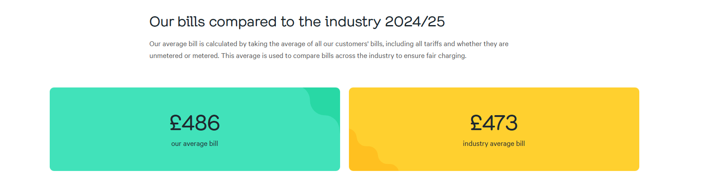

local
29 oct 24
You Can't Swim There Mate

…unless you want e-coli. It's one of the many diseases linked to water pollution, and water up and down the country has been contaminated time and time again by careless sewage disposal.The offenders? Water companies. Sure, they're supposed to keep our water clean and safe, but why do that when you can dump sewage at beaches? Whilst all companies deserve much more scrutiny than is being dished out, I'd like to turn my attention on just one; South West Water.
South West Water is the private water company responsible for the water supply of Devon and Cornwall, as well as parts of Dorset and Somerset. It's come under fire so frequently over the past few years that it's hard to keep track of every scandal, hence why it's important to highlight them here. Ask any person in Devon and Cornwall what they think of South West Water, and I think I can guess what the answer will be.
It only seems right to start off on a bad foot with the most notable incident, and that would have to be the cryptosporidium outbreak. First reported in May 2024, a damaged water pipe valve in Devon was believed to be the cause of at least 100 cases of cryptosporidium, a parasite usually spread via contaminated water. Obviously this fell entirely upon South West Water to fix, but there really shouldn't have been a faulty valve in the first place. What I find most infuriating about the issue was SWW's initial response, where they instructed residents to 'use their water as normal'. This advice was without a doubt detrimental to the people in Brixham, and likely caused an increase in cases which could've been completely avoidable if they advised people to boil water even if there was only a tiny chance it was contaminated. The move was a massive failure of duty on South West Water's part
Another incident where the company put the health of their customers at risk was in 2022 where the country was hit by widespread drought. According to the Environment Agency (obtained by Unearthed), South West Water was 'inadequately prepared' for the drought which could've led to some areas running out of water. Whilst this didn't happen, SWW reservoirs hit all time lows during the heatwave, despite them claiming that they 'reacted well'. This display of irresponsibility shows an air of carelessness towards their customers, raising uncertainties towards the company's future performance.
To cycle back to the matter of sewage, In September, Exmouth beach was issued no swim warning after no swim warning due to pollution, and this doesn't come as a surprise. In 2023, South West Water spent 530,737 hours dumping sewage into local water, with the big bosses earning crazy amounts of money whilst they ruined the beaches for the locals
In the last financial year, Susan Davy (boss of Pennon Group who own South West Water) was paid £860,000, a £300,000 increase from the previous year. SWW charges their customers an average of £13 more than the industry average which is proudly displayed on their website with a misleadingly coloured graphic.
It's important to note that lots of their customers live in Cornwall, one of the most deprived areas in the country, whilst others live in poor rural areas or poorer cities like Plymouth. These are people who shouldn't be paying more than industry average for their water bill, especially when the service is as lacking as South West Water.
The most important thing to take away is that the privatisation of the water industry has led to unattainably high bills and shocking water conditions for customers, whilst those in charge assign themselves lavish pay rises to celebrate the exploitation of the working people.